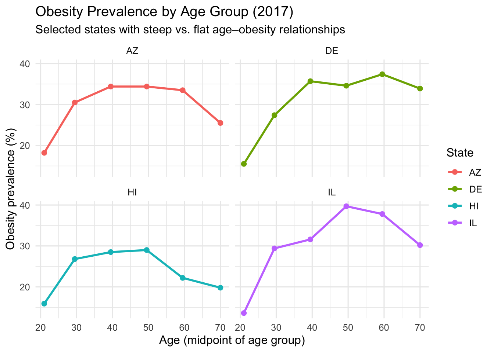

Code
### Setup packages:
library(tidyverse)
library(janitor)
library(scales)
library(stringr)
library(broom)
library(sf)
library(tigris)
options(tigris_use_cache = TRUE)STA 9750 Final Individual Report — Specific Question Analysis
This report contributes to our team’s broader investigation of how obesity varies across U.S. states and age groups, using CDC Behavioral Risk Factor Surveillance System (BRFSS) data.
Are there states where obesity rates change (rise or fall) more sharply with age relative to other states?
If obesity increases more rapidly across age groups in some states than others, this suggests differences in life-course risk profiles that are not visible when examining a single age group or overall state averages.
In our group project, we studied how obesity varies across U.S. states and age groups. The overall question for the team was:
OQ: How do obesity rates vary across U.S. states and age groups?
My individual specific question focuses on age patterns within states:
SQ: Are there states where obesity rates change (rise or fall) more sharply with age compared to other states?
Intuitively, we might expect obesity to increase with age, especially from young adulthood to middle age. However, it is not obvious whether this increase is equally steep in all states. Some states may see a rapid increase in obesity across age groups, while others might have relatively flat age profiles or even decreasing obesity rates at older ages.
This report uses Behavioral Risk Factor Surveillance System (BRFSS)–based data made available by the Centers for Disease Control and Prevention (CDC) to:
Obtain state-level obesity prevalence stratified by age groups,
Construct a simple measure of “slope” (change in obesity with age) for each state, and
Compare these slopes across states, including a choropleth map and selected examples.
All code needed to acquire, process, visualize, and analyze the data is included through the report. I will also be including a link to an attempt in utiliziung shinyapps.io to create some interactive tool.
### Setup packages:
library(tidyverse)
library(janitor)
library(scales)
library(stringr)
library(broom)
library(sf)
library(tigris)
options(tigris_use_cache = TRUE)The data come from the CDC’s Nutrition, Physical Activity, and Obesity surveillance dataset (BRFSS-based). I load it through the CDC Socrata API endpoint as a CSV.
This chunk avoids local file paths and adds a basic easier to spot failure check. The cache saves time when knitting repeatedly.
I ran into a few issues when trying to obtain the data in a seamless way. At first I wanted to utilize an API over a download but it proved to be a bit more challenging to manually do. I ended up settling with a downloadable file and a check along side it to make sure there are no repeats.
cdc_url <- "https://data.cdc.gov/resource/hn4x-zwk7.csv?$limit=50000"
cache_file <- "cdc_obesity_cache.csv"
if (file.exists(cache_file)) {
obesity_raw <- readr::read_csv(cache_file, show_col_types = FALSE)
} else {
obesity_raw <- readr::read_csv(cdc_url, show_col_types = FALSE)
readr::write_csv(obesity_raw, cache_file)
}
glimpse(obesity_raw)Rows: 50,000
Columns: 33
$ yearstart <dbl> 2011, 2011, 2011, 2011, 2011, 2011, 2011, 2…
$ yearend <dbl> 2011, 2011, 2011, 2011, 2011, 2011, 2011, 2…
$ locationabbr <chr> "AL", "AL", "AL", "AL", "AL", "AL", "AL", "…
$ locationdesc <chr> "Alabama", "Alabama", "Alabama", "Alabama",…
$ datasource <chr> "Behavioral Risk Factor Surveillance System…
$ class <chr> "Obesity / Weight Status", "Obesity / Weigh…
$ topic <chr> "Obesity / Weight Status", "Obesity / Weigh…
$ question <chr> "Percent of adults aged 18 years and older …
$ data_value_unit <lgl> NA, NA, NA, NA, NA, NA, NA, NA, NA, NA, NA,…
$ data_value_type <chr> "Value", "Value", "Value", "Value", "Value"…
$ data_value <dbl> 34.8, 35.8, 32.3, 34.1, 28.8, 16.3, 27.8, 3…
$ data_value_alt <dbl> 34.8, 35.8, 32.3, 34.1, 28.8, 16.3, 27.8, 3…
$ data_value_footnote_symbol <chr> NA, NA, NA, NA, NA, NA, NA, NA, NA, NA, NA,…
$ data_value_footnote <chr> NA, NA, NA, NA, NA, NA, NA, NA, NA, NA, NA,…
$ low_confidence_limit <dbl> 31.3, 31.1, 28.0, 29.7, 25.4, 12.6, 14.4, 3…
$ high_confidence_limit <dbl> 38.5, 40.8, 36.8, 38.8, 32.5, 20.9, 46.9, 4…
$ sample_size <dbl> 1367, 757, 861, 785, 1125, 356, 58, 598, 86…
$ total <lgl> NA, NA, NA, NA, NA, NA, NA, NA, NA, NA, NA,…
$ age_years <chr> NA, NA, NA, NA, NA, "18 - 24", NA, "25 - 34…
$ education <chr> NA, NA, NA, NA, NA, NA, NA, NA, NA, NA, NA,…
$ sex <chr> NA, NA, NA, NA, NA, NA, NA, NA, NA, NA, NA,…
$ income <chr> "$15,000 - $24,999", "$25,000 - $34,999", "…
$ race_ethnicity <chr> NA, NA, NA, NA, NA, NA, "2 or more races", …
$ geolocation <chr> "\n, \n(32.840571122, -86.631860762)", "\n…
$ classid <chr> "OWS", "OWS", "OWS", "OWS", "OWS", "OWS", "…
$ topicid <chr> "OWS1", "OWS1", "OWS1", "OWS1", "OWS1", "OW…
$ questionid <chr> "Q036", "Q036", "Q036", "Q036", "Q036", "Q0…
$ datavaluetypeid <chr> "VALUE", "VALUE", "VALUE", "VALUE", "VALUE"…
$ locationid <chr> "01", "01", "01", "01", "01", "01", "01", "…
$ stratificationcategory1 <chr> "Income", "Income", "Income", "Income", "In…
$ stratification1 <chr> "$15,000 - $24,999", "$25,000 - $34,999", "…
$ stratificationcategoryid1 <chr> "INC", "INC", "INC", "INC", "INC", "AGEYR",…
$ stratificationid1 <chr> "INC1525", "INC2535", "INC3550", "INC5075",…Data cleaning and preparation Filtering to the analytic slice
This analysis is about adult obesity prevalence by state and age group. I filter to:
class == “Obesity / Weight Status”
question == “Percent of adults aged 18 years and older who have obesity”
Age stratification rows only: stratificationcategory1 == “Age (years)”
Drop national aggregate rows (locationabbr != “US”)
Require non-missing obesity values and age group labels
This is more of a standard approach to cleaning and ensuring the usability before the analysis. It was a simple process and didnt require much troubleshooting.
obesity_age <- obesity_raw %>%
filter(
class == "Obesity / Weight Status",
question == "Percent of adults aged 18 years and older who have obesity",
stratificationcategory1 == "Age (years)",
!is.na(age_years),
!is.na(data_value),
locationabbr != "US"
) %>%
transmute(
state_abbr = locationabbr,
state_name = locationdesc,
year = yearstart,
age_group = age_years,
obesity_pct = data_value
)
glimpse(obesity_age)Rows: 2,040
Columns: 5
$ state_abbr <chr> "AL", "AL", "AL", "AL", "AL", "AL", "AK", "AK", "AK", "AK"…
$ state_name <chr> "Alabama", "Alabama", "Alabama", "Alabama", "Alabama", "Al…
$ year <dbl> 2011, 2011, 2011, 2011, 2011, 2011, 2011, 2011, 2011, 2011…
$ age_group <chr> "18 - 24", "25 - 34", "35 - 44", "45 - 54", "55 - 64", "65…
$ obesity_pct <dbl> 16.3, 35.2, 35.5, 38.0, 36.4, 27.1, 19.8, 23.5, 29.5, 29.2…The CDC age labels are categorical (e.g., “18 - 24”, “65+”). To model a linear relationship, I create an age midpoint:
If a range exists, midpoint = average of low and high bounds
If 65+, I assign midpoint = age_low + 5 (i.e., 70)
This was the limitations that I decided on myself. Given the various possible age ranges, I felt that this was the most appropriate for my analysis. There is plenty of room to rearrange the age ranges and in doing so the potential outcome of the analysis could be highly different so its something to consider for future analysis.
obesity_age <- obesity_age %>%
mutate(
age_low = readr::parse_number(age_group),
age_high = readr::parse_number(
stringr::str_extract(age_group, "[0-9]+$")
),
age_mid = case_when(
!is.na(age_high) ~ (age_low + age_high) / 2,
TRUE ~ age_low + 5
)
)
obesity_age %>%
distinct(age_group, age_mid) %>%
arrange(age_mid)This dataset spans multiple years. To keep comparisons consistent and avoid mixing time trends with age effects, I use a selected year to conduct my general analysis on.
target_year <- max(obesity_age$year, na.rm = TRUE)
target_year[1] 2017obesity_year <- obesity_age %>%
filter(year == target_year)
obesity_year %>%
summarise(
n_rows = n(),
n_states = n_distinct(state_abbr),
n_age_groups = n_distinct(age_group)
)For each state, I fit:
and I extract the slope on age_mid. I report it as percentage points per decade. I also was able to showcase high and low ends of the percentiles.
state_slopes <- obesity_year %>%
group_by(state_abbr, state_name) %>%
filter(n() >= 3) %>%
do(tidy(lm(obesity_pct ~ age_mid, data = .))) %>%
filter(term == "age_mid") %>%
ungroup() %>%
mutate(
slope_per_decade = estimate * 10,
slope_low_95 = (estimate - 1.96 * std.error) * 10,
slope_high_95 = (estimate + 1.96 * std.error) * 10
) %>%
arrange(desc(slope_per_decade))
state_slopes %>% select(state_abbr, state_name, slope_per_decade, slope_low_95, slope_high_95) %>% head(10)A slope of +3.0 means:
obesity prevalence increases by about 3 percentage points for each 10-year increase in age within that state under my specified targer year.
This is descriptive: it summarizes how obesity differs across adult age groups in the survey.
Which states have the steepest vs flattest age–obesity patterns?
top10_states <- state_slopes %>% slice_max(slope_per_decade, n = 10)
bottom10_states <- state_slopes %>% slice_min(slope_per_decade, n = 10)
top10_states %>% select(state_abbr, state_name, slope_per_decade, slope_low_95, slope_high_95)bottom10_states %>% select(state_abbr, state_name, slope_per_decade, slope_low_95, slope_high_95)I plot obesity vs. age midpoint for two “steep slope” states and two “flat slope” states. This is a quick “sniff test” that the slope rankings correspond to visually meaningful differences.
interesting_states <- c(
top10_states$state_abbr[1],
top10_states$state_abbr[2],
bottom10_states$state_abbr[1],
bottom10_states$state_abbr[2]
)
obesity_year %>%
filter(state_abbr %in% interesting_states) %>%
ggplot(aes(x = age_mid, y = obesity_pct, color = state_abbr)) +
geom_line(linewidth = 1) +
geom_point(size = 2) +
facet_wrap(~ state_abbr) +
labs(
title = paste("Obesity Prevalence by Age Group (", target_year, ")", sep=""),
subtitle = "Selected states with steep vs. flat age–obesity relationships",
x = "Age (midpoint of age group)",
y = "Obesity prevalence (%)",
color = "State"
) +
theme_minimal(base_size = 12)
This bit of code helps us to see the slope in tabular way. It provides the 5 quartiles along with the median.
options(tigris_use_cache = TRUE)
options(tigris_progress = FALSE)
states_sf <- states(cb = TRUE, year = 2022) %>%
filter(!STUSPS %in% c("AK", "HI", "PR")) %>%
transmute(
state_abbr = STUSPS,
state_name_map = NAME,
geometry
)
map_data <- states_sf %>%
left_join(state_slopes, by = "state_abbr")
summary(map_data$slope_per_decade) Min. 1st Qu. Median Mean 3rd Qu. Max. NA's
1.226 1.812 2.436 2.261 2.593 3.427 29 Now I look to analyze the obesity over a longer period of time. To ensure that the year I look at earlier is not a one off situation and to give some comparison metrics to that one year analysis.
ggplot(map_data) +
geom_sf(aes(fill = slope_per_decade), color = "white", linewidth = 0.2) +
coord_sf(
xlim = c(-125, -66),
ylim = c(24, 50),
expand = FALSE
) +
scale_fill_viridis_c(
name = "Change in obesity\nper decade of age\n(pp)",
option = "plasma",
direction = -1,
labels = label_number(accuracy = 0.1),
na.value = "grey90"
) +
labs(
title = "How Sharply Does Obesity Increase with Age, by State?",
subtitle = paste("Slope of obesity prevalence vs. age group midpoint (", target_year, ")", sep=""),
caption = "Source: CDC NPAO / BRFSS and U.S. Census TIGER/Line"
) +
theme_minimal(base_size = 12) +
theme(
axis.text = element_blank(),
axis.ticks = element_blank(),
panel.grid = element_blank(),
legend.position = "right",
plot.margin = margin(10, 10, 10, 10)
)
Yes — states differ meaningfully in how sharply obesity prevalence changes with age. Using r target_year data, the slope-per-decade ranking shows that some states have much steeper increases across adult age groups than others. The line plots provide a visual confirmation that the steepest vs. flattest states reflect real differences in the age-profile patterns.
To say that correlation does not mean causation is an argument to be made howere it opens room for more discussion. This research only answered one of many questions but in continuing research, we can look at larger variables such as change in healthcare, fast food industries, and even the economics of a country to really determine the scale of what could affect obesity rates.
To understand the analysis a bit more, we ask why might slopes differ across states?
This analysis is descriptive, but there are plausible contributors:
differences in population health, socioeconomic context, and access to preventive care
cohort effects and migration
measurement and sampling differences (BRFSS is survey-based)
A slope summarizes a pattern; it does not identify the mechanism.
Age midpoint approximation: - The 65+ group is open-ended; mapping it to 70 is an assumption. Alternative midpoints such as 67.5 or 72.5 will shift slope magnitudes slightly.
Linear model is a simplification: - The relationship between age and obesity may be non-linear (e.g., rising then flattening). A linear slope is still useful as a first-order comparison, but it may hide curvature.
Cross-sectional comparison within a year: - This compares age groups within r target_year, not the same individuals over time.
Our overall project asks how obesity varies across states and age groups. This specific analysis adds a strong lens:
It quantifies how strongly obesity prevalence changes across adult age groups within each state.
It identifies states where the age gradient is particularly steep or flat, which helps target follow-up questions about regional patterns, policy environments, or demographic composition.
Using CDC surveillance data and a simulation-based uncertainty analysis, I find clear cross-state differences in the age-gradient of obesity prevalence. This provides a clean, reproducible measure of “how sharply obesity changes with age,” and it complements the team’s broader geographic and demographic analyses.
Link to an interactive hosted webpage: https://wanderloost.shinyapps.io/fall_2025_-_software_tools_for_data_analytics/